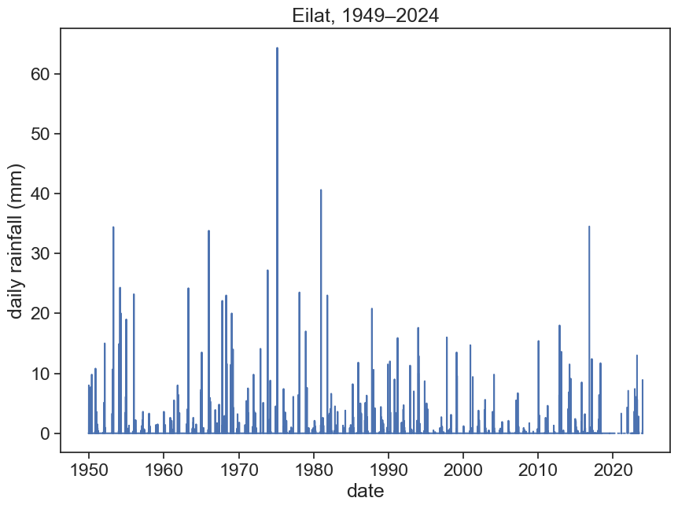

import matplotlib.pyplot as plt
import numpy as np
import pandas as pd
# from functools import reduce
import seaborn as sns
sns.set(style="ticks", font_scale=1.5)
from pandas.plotting import register_matplotlib_converters
register_matplotlib_converters()
import urllib.request
from scipy.stats import genextreme
from scipy.optimize import curve_fit8 Exercises
Import relevant packages
Go to NOAA’s National Centers for Environmental Information (NCEI)
Climate Data Online: Dataset Discovery
Find station codes in this map. On the left, click on the little wrench next to “Global Summary of the Month”, then click on “identify” on the panel that just opened, and click on a station (purple circle). You will see the station’s name, it’s ID, and the period of record. For example, for Ben-Gurion’s Airport in Israel:
BEN GURION, IS
STATION ID: ISM00040180
Period of Record: 1951-01-01 to 2020-03-01
You can download daily or monthly data for each station. Use the function below to download this data to your computer. station_name can be whatever you want, station_code is the station ID.
def download_data(station_name, station_code):
url_daily = 'https://www.ncei.noaa.gov/data/global-historical-climatology-network-daily/access/'
url_monthly = 'https://www.ncei.noaa.gov/data/gsom/access/'
# download daily data - uncomment the following 2 lines to make this work
urllib.request.urlretrieve(url_daily + station_code + '.csv',
station_name + '_daily.csv')
# download monthly data
urllib.request.urlretrieve(url_monthly + station_code + '.csv',
station_name + '_monthly.csv')Download daily rainfall data for Eilat, Israel. ID: IS000009972
download_data('Eilat', 'IS000009972')Then load the data into a dataframe.
IMPORTANT!! daily precipitation data is in tenths of mm, divide by 10 to get it in mm.
df = pd.read_csv('Eilat_daily.csv', sep=",")
# make 'DATE' the dataframe index
df['DATE'] = pd.to_datetime(df['DATE'])
df = df.set_index('DATE')
# IMPORTANT!! daily precipitation data is in tenths of mm, divide by 10 to get it in mm.
df['PRCP'] = df['PRCP'] / 10
df| STATION | LATITUDE | LONGITUDE | ELEVATION | NAME | PRCP | PRCP_ATTRIBUTES | TMAX | TMAX_ATTRIBUTES | TMIN | TMIN_ATTRIBUTES | TAVG | TAVG_ATTRIBUTES | |
|---|---|---|---|---|---|---|---|---|---|---|---|---|---|
| DATE | |||||||||||||
| 1949-11-30 | IS000009972 | 29.55 | 34.95 | 12.0 | ELAT, IS | 0.0 | ,,E | NaN | NaN | NaN | NaN | NaN | NaN |
| 1949-12-01 | IS000009972 | 29.55 | 34.95 | 12.0 | ELAT, IS | 0.0 | ,,E | NaN | NaN | NaN | NaN | NaN | NaN |
| 1949-12-02 | IS000009972 | 29.55 | 34.95 | 12.0 | ELAT, IS | 0.0 | ,,E | NaN | NaN | NaN | NaN | NaN | NaN |
| 1949-12-03 | IS000009972 | 29.55 | 34.95 | 12.0 | ELAT, IS | 0.0 | ,,E | NaN | NaN | NaN | NaN | NaN | NaN |
| 1949-12-04 | IS000009972 | 29.55 | 34.95 | 12.0 | ELAT, IS | 0.0 | ,,E | NaN | NaN | NaN | NaN | NaN | NaN |
| ... | ... | ... | ... | ... | ... | ... | ... | ... | ... | ... | ... | ... | ... |
| 2023-04-22 | IS000009972 | 29.55 | 34.95 | 12.0 | ELAT, IS | NaN | NaN | 303.0 | ,,S | 177.0 | ,,S | 246.0 | H,,S |
| 2023-04-23 | IS000009972 | 29.55 | 34.95 | 12.0 | ELAT, IS | 0.0 | ,,S | 294.0 | ,,S | 211.0 | ,,S | 260.0 | H,,S |
| 2023-04-24 | IS000009972 | 29.55 | 34.95 | 12.0 | ELAT, IS | NaN | NaN | 328.0 | ,,S | 199.0 | ,,S | 265.0 | H,,S |
| 2023-04-25 | IS000009972 | 29.55 | 34.95 | 12.0 | ELAT, IS | NaN | NaN | 319.0 | ,,S | 190.0 | ,,S | 253.0 | H,,S |
| 2023-04-26 | IS000009972 | 29.55 | 34.95 | 12.0 | ELAT, IS | NaN | NaN | 334.0 | ,,S | 179.0 | ,,S | 267.0 | H,,S |
26803 rows × 13 columns
Plot precipitation data (‘PRCP’ column) and see if everything is all right.
fig, ax = plt.subplots(figsize=(10,7))
ax.plot(df['PRCP'])
ax.set_xlabel("date")
ax.set_ylabel("daily rainfall (mm)")
ax.set_title("Eilat, 1949–2021")Text(0.5, 1.0, 'Eilat, 1949–2021')
Based on what you see, you might want to exclude certain periods, e.g.:
last_date = '2018-08-01'
first_date = '1950-08-01'
df = df[((df.index < last_date) & (df.index > first_date))]
df| STATION | LATITUDE | LONGITUDE | ELEVATION | NAME | PRCP | PRCP_ATTRIBUTES | TMAX | TMAX_ATTRIBUTES | TMIN | TMIN_ATTRIBUTES | TAVG | TAVG_ATTRIBUTES | |
|---|---|---|---|---|---|---|---|---|---|---|---|---|---|
| DATE | |||||||||||||
| 1950-08-02 | IS000009972 | 29.55 | 34.95 | 12.0 | ELAT, IS | 0.0 | ,,E | 400.0 | ,,G | 240.0 | ,,G | NaN | NaN |
| 1950-08-03 | IS000009972 | 29.55 | 34.95 | 12.0 | ELAT, IS | 0.0 | ,,E | 410.0 | ,,G | 260.0 | ,,G | NaN | NaN |
| 1950-08-04 | IS000009972 | 29.55 | 34.95 | 12.0 | ELAT, IS | 0.0 | ,,E | 400.0 | ,,G | 260.0 | ,,G | NaN | NaN |
| 1950-08-05 | IS000009972 | 29.55 | 34.95 | 12.0 | ELAT, IS | 0.0 | ,,E | NaN | NaN | 240.0 | ,,G | NaN | NaN |
| 1950-08-06 | IS000009972 | 29.55 | 34.95 | 12.0 | ELAT, IS | 0.0 | ,,E | 370.0 | ,,G | 240.0 | ,,G | NaN | NaN |
| ... | ... | ... | ... | ... | ... | ... | ... | ... | ... | ... | ... | ... | ... |
| 2018-07-27 | IS000009972 | 29.55 | 34.95 | 12.0 | ELAT, IS | 0.0 | ,,S | 414.0 | ,,S | NaN | NaN | 359.0 | H,,S |
| 2018-07-28 | IS000009972 | 29.55 | 34.95 | 12.0 | ELAT, IS | 0.0 | ,,S | 386.0 | ,,S | NaN | NaN | 329.0 | H,,S |
| 2018-07-29 | IS000009972 | 29.55 | 34.95 | 12.0 | ELAT, IS | 0.0 | ,,S | NaN | NaN | 268.0 | ,,S | 334.0 | H,,S |
| 2018-07-30 | IS000009972 | 29.55 | 34.95 | 12.0 | ELAT, IS | 0.0 | ,,S | 375.0 | ,,S | 277.0 | ,,S | 327.0 | H,,S |
| 2018-07-31 | IS000009972 | 29.55 | 34.95 | 12.0 | ELAT, IS | 0.0 | ,,S | 390.0 | ,,S | NaN | NaN | 336.0 | H,,S |
24836 rows × 13 columns
The rainfall data for Eilat is VERY seasonal, it’s easy to see that there is no rainfall at all during the summer. We can assume a hydrological year starting on 1 August. If you’re not sure, you can plot the monthly means (see last week’s lecture) and find what date makes sense best.
df_month = df['PRCP'].resample('M').sum().to_frame()
month_numbers = np.arange(1,13)
monthly_mean = np.array([]) # empty array
for m in month_numbers: # cycle over months (1, 2, 3, etc)
this_month_mean = df_month[df_month.index.month == m].mean() # this is the monthly mean
monthly_mean = np.append(monthly_mean, this_month_mean) # append
# make new df and return it
df_month = pd.DataFrame({'monthly rainfall (mm)':monthly_mean,
'month number':month_numbers
})
fig, ax = plt.subplots(figsize=(10,7))
ax.bar(df_month['month number'], df_month['monthly rainfall (mm)'])
ax.set(xlabel="month",
ylabel="monthly rainfall (mm)",
title="Monthly average, Eilat, 1949--2018",
xticks=np.arange(1,13));
Let’s resample the data according to the hydrological year (1 August), and we’ll keep the maximum value:
max_annual = (df['PRCP'].resample('A-JUL')
.max()
.to_frame()
)
max_annual| PRCP | |
|---|---|
| DATE | |
| 1951-07-31 | 10.8 |
| 1952-07-31 | 15.0 |
| 1953-07-31 | 34.4 |
| 1954-07-31 | 24.3 |
| 1955-07-31 | 19.0 |
| ... | ... |
| 2014-07-31 | 11.5 |
| 2015-07-31 | 2.4 |
| 2016-07-31 | 8.5 |
| 2017-07-31 | 34.5 |
| 2018-07-31 | 11.7 |
68 rows × 1 columns
Make two graphs: a) the histogram for the annual maximum (pdf) b) the cumulative probability (cdf)
fig, (ax1, ax2) = plt.subplots(2, 1, figsize=(10,8))
h=max_annual['PRCP'].values
ax1.hist(h, bins=np.arange(0,100,10), density=True)
ax2.hist(h, bins=np.arange(0,100,10), cumulative=1, density=True)
ax1.set(ylabel="pdf")
ax2.set(xlabel="annual daily precipitation maxima (mm)",
ylabel="cdf",
);
How to make a cdf by yourself?
# sort the annual daily precipitation maxima, from lowest to highest
max_annual['max_sorted'] = np.sort(max_annual['PRCP'])
# let's give it a name, h
h = max_annual['max_sorted'].values
# make an array "order" of size N=len(h), from 0 to N-1
N = len(h)
order = np.arange(N)
# make a new array, "fraction"
fraction = order / NPlot it next to the cdf that pandas’ hist makes for you. What do you see?
fig, ax = plt.subplots(1, 1)
ax.hist(h, bins=np.arange(0,100,10), cumulative=1, density=True, label="from 'hist'")
ax.plot(h, fraction, color="tab:orange", linewidth=3, label="our cdf")
ax.set_ylabel("cdf")
ax.set_xlabel("annual daily precipitation maxima (mm)")
ax.set_title("Eilat")
ax.legend()<matplotlib.legend.Legend at 0x7faf946b35b0>
The generalized extreme value distribution has 3 parameters: shape, location, scale.
Let’s get a “best fit” estimate of these parameters for Eilat’s rainfall statistics.
params = genextreme.fit(h)
print("Best fit:")
print(f"shape = {params[0]:.2f}\nlocation = {params[1]:.2f}\nscale = {params[2]:.2f}")Best fit:
shape = -0.44
location = 6.17
scale = 5.58Let’s see the GEV distribution for these parameters
fig, ax = plt.subplots(1, 1)
ax.hist(h, bins=np.arange(0,100,10), density=True, label="from 'hist'")
rain = np.arange(0,80)
pdf_rain = genextreme(c=params[0], loc=params[1], scale=params[2]).pdf(rain)
ax.plot(rain, pdf_rain, color="tab:orange", lw=3, label="gev fit")
ax.set_ylabel("pdf")
ax.set_xlabel("annual daily precipitation maxima (mm)")
ax.set_title("Eilat")
ax.legend()<matplotlib.legend.Legend at 0x7faf96631f40>
We can do the same for the cdf…
fig, ax = plt.subplots(1, 1)
ax.plot(h, fraction, color="tab:blue", linewidth=3, label="our cdf")
rain = np.arange(0,80)
cdf_rain = genextreme(c=params[0], loc=params[1], scale=params[2]).cdf(rain)
ax.plot(rain, cdf_rain, color="tab:orange", lw=3, label="gev fit")
ax.set_ylabel("cdf")
ax.set_xlabel("annual daily precipitation maxima (mm)")
ax.set_title("Eilat")
ax.legend()<matplotlib.legend.Legend at 0x7faf8caaabb0>
We are almost there! Remember that the return time are given by:
\[ T_r(x) = \frac{1}{1-F(x)}, \]
where \(F\) is the cdf.
Survival \(= 1-F\)
The package that we are using, scipy.stats.genextreme has a method called isf, or inverse survival function, which is exactly what we want! In order to use it, you have to feed it a “quantile” q or probability. Suppose you want to know how strong is a 1 in a 100 year event, then your return period is 100 (years), and the probability is simply its inverse, 1/100.
# Compute the return levels for several return periods.
return_periods = np.array([5, 10, 20, 50, 100, 500])
return_levels = genextreme.isf(1/return_periods, *params)
print("Return levels:")
print()
print("Period Level")
print("(years) (mm)")
for period, level in zip(return_periods, return_levels):
print(f'{period:4.0f} {level:9.2f}')Return levels:
Period Level
(years) (mm)
5 18.03
10 27.64
20 40.38
50 64.17
100 89.63
500 189.22You might want to do the opposite: given a list of critical daily max levels, what are the return periods for them? In this case you can use the sf method, “survival function”.
levels_mm = np.array([20, 50, 100, 200, 300])
return_per = 1/genextreme.sf(levels_mm, *params)
print("Return levels:")
print()
print("Level Period")
print("(mm) (years)")
for level,period in zip(levels_mm, return_per):
print(f'{level:9.2f} {period:4.0f}')Return levels:
Level Period
(mm) (years)
20.00 6
50.00 30
100.00 126
200.00 565
300.00 1383